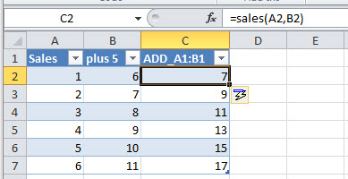
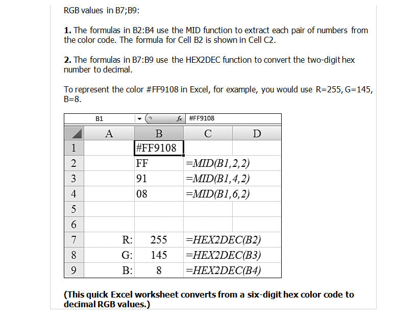

VBA Mail Merge - - Excel VBA Training - - Anaylsis - -Excel.Tips - - Speadsheet Guru(PW=TSG) - All about tables
Excel
- Macro Commands
- Sub sbOpenAnything()
Dim sXLFile As String
Dim sFolder As String
Dim sWebsite As String
sFolder = "C:\Temp\" ' You can change as per your requirement
sXLFile = "C:\Temp\test1.xls" ' You can change as per your requirement
sWebsite = "https://www.analysistabs.com/" ' You can change as per your requirement
ActiveWorkbook.FollowHyperlink Address:=sFolder, NewWindow:=True 'Open Folder
ActiveWorkbook.FollowHyperlink Address:=sXLFile, NewWindow:=True 'Open excel workbook
ActiveWorkbook.FollowHyperlink Address:=sWebsite, NewWindow:=True 'Open Website
End Sub - Sub sbCreatingEmail()
Dim sMsg As String
Dim Recipient As String
Dim RecipientCC As String
Dim RecipientBCC As String
Dim sSub As String
Dim sHLink As String
Recipient = "test@org.email.com"
RecipientCC = "test@org.email.com"
RecipientBCC = "test@org.email.com"
sSub = "Test Mail"
sMsg = "Hi, this is a auto generated mail from excel"
sHLink = "mailto:" & Recipient & "?" & "cc=" & RecipientCC & "&" & "bcc=" & RecipientBCC & "&"
sHLink = sHLink & "subject=" & sSub & "&"
sHLink = sHLink & "body=" & sMsg
ActiveWorkbook.FollowHyperlink (sHLink)
Application.Wait (Now + TimeValue("0:00:03"))
Application.SendKeys "%s" 'Send Keys
End Sub Name Type Details Symbol Byte Numerical Whole number between 0 and 255. Integer Numerical Whole number between -32'768 and 32'767. % Long Numerical Whole number between - 2'147'483'648 and 2'147'483'647. & Currency Numerical Fixed decimal number between -922'337'203'685'477.5808 and 922'337'203'685'477.5807. @ Single Numerical Floating decimal number between -3.402823E38 and 3.402823E38. ! Double Numerical Floating decimal number between -1.79769313486232D308 and 1.79769313486232D308. # String Text Text. $ Date Date Date and time. Boolean Boolean True or False. Object Object Microsoft Object. Variant Any type Any kind of data (default type if the variable is not declared).
Example of using a symbol:
- Dim example As Integer
Dim example%-
If a variable is declared at the beginning of a procedure (Sub), it can only be used within this same procedure.
The value of the variable will not be maintained after the execution of the procedure.
Sub procedure1()
Dim var1 As Integer
' => Use of a variable only within a procedure
End Sub
Sub procedure2()
- ' => var1 cannot be used here
In order to use a variable in any of the procedures within a module, all you have to do is declare it at the
beginning of the module. And if you declare a variable this way, its value will be maintained until the workbook is closed.
Dim var1 As Integer
Sub procedure1()
- ' => var1 can be used here
Sub procedure2()
' => var1 can also be used here
End Sub
If you want to be able to use a variable in any module, on the same principle as the previous example,
all you have to do is replace Dim with Global:
Global var1 As Integer
To maintain the value of a variable after the execution of the procedure in which it appears, replace Dim with Static :
Sub procedure1()
Static var1 As Integer
End Sub
To maintain the values of all the variables in a procedure, add Static before Sub:
Static Sub procedure1()
Dim var1 As Integer
End Sub
= is equal to <> is different than < is less than <= is less than or eual to > is greater than >= is greater than or equal to - last_name = Cells(row_number, 1)
first_name = Cells(row_number, 2)
age = Cells(row_number, 3)
MsgBox last_name & " " & first_name & ", " & age & " years old"
Else 'IF NUMBER IS INCORRECT - MsgBox "Your entry " & Range("F5") & " is not a valid number !"
Range("F5").ClearContents
End If - MsgBox "Your entry " & Range("F5") & " is not valid !"
Range("F5").ClearContents
End If - To protect your code, open the Excel Workbook and go to Tools>Macro>Visual Basic Editor (Alt+F11).
Now, from within the VBE go to Tools>VBAProject Properties and then click the Protection page tab and then check "Lock project from viewing" and then enter your password and again to confirm it.
http://www.ozgrid.com/VBA/protect-vba-code.htm -
Dim aFile As String
- aFile = "C:\WinningNumbers\DownloadAllNumbers.txt"
If Dir(aFile) = "" Then
- MsgBox "Please download Lotto numbers and try again!"
Exit Sub -
Sub delfilenumbers()
Dim aFile As String
aFile = "C:\WinningNumbers\DownloadAllNumbers.txt"
If Len(Dir$(aFile)) > 0 Then
Kill aFile
End If
End Sub
- Question: I'm not sure if a particular directory exists already. If it doesn't exist, I'd like to create it using VBA code. How can I do this?
Answer: You can test to see if a directory exists using the VBA code below:
If Len(Dir("c:\TOTN\Excel\Examples", vbDirectory)) = 0 Then
MkDir "c:\TOTN\Excel\Examples"
End If -
Sub filefolder()
Dim name As String
name = InputBox("Create new file in C:\Dano")
If Len(Dir("c:\Dano\" & name, vbDirectory)) = 0 Then
MkDir "c:\Dano\" & name
Exit Sub
End If
MsgBox "Sorry that name already exists please try again"
End Sub
-
Sub Make_Dir_on_G()
MkDir "G:\DannyBoy" ' This will create a folder named DannyBoy on Drive G:\
End Sub
Sub Remove_Dir_on_G()
RmDir "G:\DannyBoy" ' This will remove the folder DannyBoy on drive G:\
End Sub
Sub Delete_all_txt_files()
Kill "G:\DannyBoy\*.txt" ' This will delete all .txt files found in G:\DannyBoy folder
End Sub
-
Original folder is Dano.
#1 Will create a folder in Dano using the inputbox to name for folder. If the folder name already exist, you will get a messagebox error.
#2 Will copy a pre existing file named templa.xlsm to a folder specified by the inputbox.
#1
Sub filefolder()
Dim name As String
name = InputBox("Create new file in C:\Dano")
If Len(Dir("c:\Dano\" & name, vbDirectory)) = 0 Then
MkDir "c:\Dano\" & name
Exit Sub
End If
MsgBox "Sorry that name already exists please try again"
End Sub
#2
Sub copytemplate()
'
Dim frompath As String
Dim topath As String
Dim name As String
name = InputBox("Name to put template in?")
frompath = "C:\Dano\Templa.xlsm"
topath = "C:\Dano\" & name & "\" & name & ".xlsm"
FileCopy frompath, topath
End Sub
- Owner of file uploads file to Microsoft OneDrive.
- Owner then opens file from Microsoft OneDrive.
- Owner then clicks share and sends email('s) to people whom he wants to share with.
- Email Recipiant's open file from the email they received. Then they can click edit from browser to edit file. File is auto saved, there is no save button.
- Once file has been completed, it can be downloaded by all to there computer if necessary.
- Everyone will see changes being made by others.
- Macro's will not work online, however all macros will be intact if a person downloads the file to there local machine. One problem with this is that the macro button will not be seen however if there is a keystroke equivalent the macro will work. After down load you can still add a button and then assign to the macro if you choose to do so.
- If [a1] > "6" Then Exit Sub
Example:
- Sub playnumbers()
Application.ScreenUpdating = False
Dim myRow As Variant
myRow = InputBox("Enter Row # to Play.")
Range("A1").Value = myRow
If [a1] = "1" Then [C5:H5].Copy
If [a1] = "2" Then [C6:H6].Copy
If [a1] = "3" Then [C7:H7].Copy
If [a1] = "4" Then [C8:H8].Copy
If [a1] = "5" Then [C9:H9].Copy
If [a1] = "6" Then [C12:H12].Copy
If [a1] > "6" Then Exit Sub
[C14].Select
Selection.End(xlDown).Select
ActiveCell.Offset(1, 0).Range("A1").Select
Selection.PasteSpecial Paste:=xlPasteValues, Operation:=xlNone, SkipBlanks _
:=False, Transpose:=False- Or Just
- Selection.PasteSpecial Paste:=xlPasteValues
Application.CutCopyMode = False
End Sub -
Select VBA Coding Entire Table ActiveSheet.ListObjects("Table1").Range.Select Table Header Row ActiveSheet.ListObjects("Table1").HeaderRowRange.Select Table Data ActiveSheet.ListObjects("Table1").DataBodyRange.Select Third Column ActiveSheet.ListObjects("Table1").ListColumns(3).Range.Select Third Column (Data Only) ActiveSheet.ListObjects("Table1").ListColumns(3).DataBodyRange.Select Select Row 4 of Table Data ActiveSheet.ListObjects("Table1").ListRows(4).Range.Select Select 3rd Heading ActiveSheet.ListObjects("Table1").HeaderRowRange(3).Select Select Data point in Row 3, Column 2 ActiveSheet.ListObjects("Table1").DataBodyRange(3, 2).Select Subtotals ActiveSheet.ListObjects("Table1").TotalsRowRange.Select
Inserting Rows and Columns Into The Table
Select VBA Coding Insert A New Column 4 ActiveSheet.ListObjects("Table1").ListColumns.Add Position:=4 Insert Column at End of Table ActiveSheet.ListObjects("Table1").ListColumns.Add Insert Row Above Row 5 ActiveSheet.ListObjects("Table1").ListRows.Add (5) Add Row To Bottom of Table ActiveSheet.ListObjects("Table1").ListRows.Add AlwaysInsert:= True Add Totals Row ActiveSheet.ListObjects("Table1").ShowTotals = True - Sub RemovePartsOfTable()
Dim tbl As ListObject
Set tbl = ActiveSheet.ListObjects("Table1")
'Remove 3rd Column
tbl.ListColumns(3).Delete
'Remove 4th DataBody Row
tbl.ListRows(4).Delete
'Remove 3rd through 5th DataBody Rows
tbl.Range.Rows("3:5").Delete
'Remove Totals Row
tbl.TotalsRowRange.Delete
End Sub - Sub ResetTable()
Dim tbl As ListObject
Set tbl = ActiveSheet.ListObjects("Table1")
'Delete all table rows except first row
With tbl.DataBodyRange
If .Rows.Count > 1 Then
.Offset(1, 0).Resize(.Rows.Count - 1, .Columns.Count).Rows.Delete
End If
End With
'Clear out data from first table row
tbl.DataBodyRange.Rows(1).ClearContents
End Sub - In this example the table starts at row 8 and has been named "ProjectInvoice". We can calculate using the Header named [Price].
Above the Table in column "C" is the Bill To Data and in the merged cells D4 and E4 is the phone number. We can get this data by using the invoice number in G4.- Bill To:
- The data =Vlookup(G4,CustomerList,2,False)
- Phone,Fax & Email
-
="Phone:" &Vlookup(G4,A1:B20,2,False)
Note! Phone Fax and Email are located in merged cell D4 and E4. The word "Phone:" is apart of the formula.
- Sub CopyTables()
Worksheets(1).ListObjects("Table1").Range.Copy _
Destination:=Worksheets(2).Range("A1")
Worksheets(1).ListObjects("Table2").Range.Copy _
Destination:=Worksheets(2).Range("O1")
End Sub
Good information about Tables in VBA:
- Selection.PasteSpecial Paste:=xlPasteValues, Operation:=xlNone, SkipBlanks _
:=False, Transpose:=False
Application.CutCopyMode = False -
Syntax of InputBox in VBA:
Its syntax is as follows:
InputBox(prompt[, title] [, default] [, xpos] [, ypos] [, helpfile, context] )
‘prompt’ refers to the message that is displayed to the user.
‘title’ is an optional argument. It refers to the heading on the input dialog window. If it is omitted then a default title “Microsoft Excel” is shown.
‘default’ it is an optional argument. It refers to the value that will appear in the textbox when the InputBox is initially displayed. If this argument is omitted, the textbox is left empty.
‘xpos’ is an optional argument. It refers to the positional coordinate of the input dialog window on X-axis.
‘ypos’ is also an optional argument. It refers to the positional coordinate of the input dialog window on Y-axis.
‘helpfile’ it is the location of help file that should be used with the InputBox. This is an optional parameter but it becomes a mandatory argument when ‘context’ argument is passed.
‘context’ represents the HelpContextId in the referenced ‘helpfile’. It is an optional paramete
- Rather than having multiple macro buttons on one page, try using a combobox and assign the target number to a macro.
Example:
Sub orderformActions()
If Worksheets("List").Range("P2") = "2" Then Call MoveOrderData
If Worksheets("List").Range("P2") = "3" Then Call AddRowToTable5
If Worksheets("List").Range("P2") = "4" Then Call ResetTenRowsOnOrderForm
ActiveSheet.Shapes("Drop Down 21").OLEFormat.Object.Value = 1
ActiveWorkbook.Save
End Sub
- Do Until IsEmpty(ActiveCell)
If ActiveCell = "Part#" Then
Range(ActiveCell, ActiveCell.End(xlDown)).Copy Destination:=[J1]
ActiveCell.Offset(0, 1).Select
Else
ActiveCell.Offset(0, 1).Select
End If
Loop - Do Until IsEmpty(ActiveCell)
If ActiveCell = "SR Number" Then
Range(ActiveCell, ActiveCell.End(xlDown)).Copy Destination:=[K1]
ActiveCell.Offset(0, 1).Select
Else
ActiveCell.Offset(0, 1).Select
End If
Loop - Do Until IsEmpty(ActiveCell)
If ActiveCell = "BOM" Then
Range(ActiveCell, ActiveCell.End(xlDown)).Copy Destination:=[L1]
ActiveCell.Offset(0, 1).Select
Else
ActiveCell.Offset(0, 1).Select
End If
Loop
End Sub
- Range(ActiveCell, ActiveCell.End(xlToRight)).ClearContents
Here is an example
Sub del2012()
[a432].Select
Do 'This do loop looks for the date
If ActiveCell.Value = "12/29/2012" Then Exit Do
ActiveCell.Offset(1, 0).Select
Loop
Range(ActiveCell, ActiveCell.End(xlToRight)).ClearContents ' This will clear contiguous data in active row.
End Sub - Worksheets("Sheet2").Cells(Row#, Column#)
-
Copy from Activecell to end of same Row when the end of row has a specific cell address. Example shows Activecell is currently at cell address G4. This will copy from activecell to Cell UG4.
Range(ActiveCell, Cells(4, 553)).Copy
(Copies from Activecell to cell address UG4.)
Range(ActiveCell, Cells(Row#, Column#)).Copy
The Row# and Column# can also be variables.
- Sub CopyCelltoMultipleCells()
Range("B17").Formula = "=sum(B18:B20)"
Range("B17").Copy Destination:=Range("C17:H17")
End Sub - Sub copyRangetoCell()
Range("B18:H20").Copy Destination:=Range("B25")
End Sub
- Sub CopyCelltoCell()
Cells(1, 10).Copy Destination:=Cells(1, 12)
'Cells(Row,Col).Copy Destination:=Cells(Row,Col)
'........ Cell=J1 ....................................... Cell=L1
End Sub - Sub CopyAndPasteSelect()
'
' This will offset and paste to cell
[A1].Select
Selection.Copy
ActiveCell.Offset(0, 3).Select
ActiveSheet.Paste
End Sub - Sub copyRangeselect()
'
' This pastes directly to the cell
Range("A1:B10").Copy
[d1].Select
ActiveSheet.Paste
End Sub - Dim Rang as Range
Set Rang = Range("List!C61:OI61")
Rang.copy
ActiveSheet.Paste - Note: (r,c) can be variables. Just declare there values or cell address.
(example)-
Dim r as integer
r = 1 or r = [Sheet2!A1]
Range(Cells(r, c), Cells(r, cc)).Copy Destination:=Range("List!AM2") - Dim Rng1 As Range
Set Rng1 = Sheets("Sheet2").Range(Sheets("Sheet2").Cells(4, 51), Sheets("Sheet2").Cells(4, 55))
rng1.select
Selection.copy
or
rng.copy Destination:=Range("A1:E1")
So from Sheet1 this will select range (row4, col51) thru (row4, col55) from Sheet2. - Sub ClearFlowData()
Dim rng1 As Range
Set rng1 = Range(Cells(R, C), Cells(R1, C1))
rng1.ClearContents
End Sub -
Rows("2:6").select
Column("A:C").select
Example:-
Rows("1:2").Select
Selection.RowHeight = 10
Columns("C:C").Select or Columns("C:G").Select
Selection.ColumnWidth = 10 -
Sub fonts()
- Range("A1:A10").Font.Name = "Arial"
Range("A1:A10").Font.Bold = True
Range("A1:A10").Font.Size = 18
Range("A1:A10").Font.Italic = True
Range("A1:A10").Font.Underline = True
Sub addingBorders()
- Range("A1:A10").Borders.Value = 1 ' adds border to range
Range("A1:A10").Borders.Value = 0 ' removes border from range
-
This code makes it possible to set different properties of the active cell :
Sub properties()
ActiveCell.Borders.Weight = 3
ActiveCell.Font.Bold = True
ActiveCell.Font.Size = 18
ActiveCell.Font.Italic = True
ActiveCell.Font.Name = "Arial"
End Sub
In this case, we can use With to avoid having to repeat ActiveCell.
Now you will see how With works:
Sub properties()
' Beginning of instructions using command: WITH
With ActiveCell
- .Borders.Weight = 3
.Font.Bold = True
.Font.Size = 18
.Font.Italic = True
.Font.Name = "Arial"
'End of instructions using command: END WITH
End With
This way we don't have to repeat ActiveCell.
Although it isn't really necessary in this case, we could avoid repeating .Font, too, which would look like this :
Sub properties()
With ActiveCell
- .Borders.Weight = 3
- With .Font
.Bold = True
.Size = 18
.Italic = True
.Name = "Arial"
End With
- Sub hideaSheet()
'
Sheets("Sheet3").Visible = 0 ' this will hide the sheet
Sheets("Sheet3").Visible = 1 ' this will unhide the sheet
End Sub - The solution for this problem is to add the line of code
Application.EnableCancelKey = xlDisabled
in the first line of your macro.. This will fix the problem and you will be able to execute the macro successfully without getting the error message “Code execution has been interrupted”. -
If the macro errors or stops with “Code execution has been halted”
Press "Debug" button in the popup.
Press Ctrl+Pause | Break twice.
Hit the play button to continue.
Save the file after completion.
- Sub LastCellinColString_Total()
Dim col As Integer
col = 1
[a1].Select
Do Until IsEmpty(ActiveCell)
FinalRow = Cells(Rows.Count, col).End(xlUp).Row '-This defines the Final Row same as =CountA(A:A) for column "A"
TotalRow = FinalRow + 1 ' - This moves the activecell down one cell
Cells(TotalRow, col).Value = "Dan" ' This places the word "Dan" in the cell by TotalRow and Col
ActiveCell.Offset(0, 1).Select
col = col + 1 ' This adds 1 to the column count
Loop
End Sub
-
Sub copyCD()
'
Dim myname As StringFinalRow = Cells(Rows.Count, 1).End(xlUp).Row
myname = InputBox("What is your name")
[a1].Select
Do
If ActiveCell = myname Then
Range(ActiveCell, ActiveCell.Offset(FinalRow, 0)).Copy Destination:=[F1]
Exit Do
Else
ActiveCell.Offset(0, 1).Select
End IfLoop
End Sub
- Sub MovefromTanktoTank()
Application.ScreenUpdating = False
Dim batch As Integer
Dim vessel As Variant
Dim days As Date
Dim btcR As Integer
Dim Rang1 As Range
btcR = [List!AX3]
Set Rang1 = Sheets("List").Range(Sheets("List").Cells(4, 51), Sheets("List").Cells(4, 55))
batch = InputBox("Enter Current Batch #")
Sheets("List").Range("AX2") = batch
Range(Cells(btcR, 2), Cells(btcR, 6)).Copy Destination:=Range("List!AY2")
Sheets("List").Activate
Range("AY2:BC2").Copy Destination:=Range("AY4")
days = InputBox("Enter **New** Date to move to")
Range("AY4") = days
vessel = InputBox("Enter **New** Vessel name")
Range("BA4") = vessel
Sheets("Sched").Select
Cells(btcR, 5).ClearContents
Cells(btcR, 6).ClearContents
Rang1.Copy Destination:=Range("B3")
End Sub - Sub toppick()
'
' The first Drop down box (ComboBox) is tied to [list!A6] and can call other ComboBoxes 8 & 9 as sub drop downs
' This is the stack method. Stack ComboBoxes and bring to front
If [List!A6] = "1" Then ActiveSheet.Shapes("Drop Down 8").ZOrder msoBringToFront
If [List!A6] = "2" Then ActiveSheet.Shapes("Drop Down 9").ZOrder msoBringToFront
End Sub
-
Sub Send_Email()
'
'
Dim CDO_Mail As Object
Dim CDO_Config As Object
Dim SMTP_Config As Variant
Dim strSubject As String
Dim strFrom As String
Dim strTo As String
Dim strCc As String
Dim strBcc As String
Dim strBody As String
subj = [e1]
body = [f1]
too = [g1]
cc = [h1]
bcc = [i1]
strSubject = subj
strFrom = "dcarp1@cox.net"
' strTo = ""
strTo = too
strCc = cc
strBcc = bcc
strBody = body
' strBody = "The total results for this quarter are: "
Set CDO_Mail = CreateObject("CDO.Message")
On Error GoTo Error_Handling
Set CDO_Config = CreateObject("CDO.Configuration")
CDO_Config.Load -1
Set SMTP_Config = CDO_Config.Fields
With SMTP_Config
.Item("http://schemas.microsoft.com/cdo/configuration/sendusing") = 2
.Item("http://schemas.microsoft.com/cdo/configuration/smtpserver") = "smtp.west.cox.net"
.Item("http://schemas.microsoft.com/cdo/configuration/smtpserverport") = 25
.Update End With
With CDO_Mail
Set .Configuration = CDO_Config
End With
CDO_Mail.Subject = strSubject
CDO_Mail.From = strFrom
CDO_Mail.to = strTo
CDO_Mail.TextBody = strBody
CDO_Mail.cc = strCc
CDO_Mail.bcc = strBcc
CDO_Mail.Send
Error_Handling:
If Err.Description <> " " Then MsgBox Err.Description
End Sub
- Dim myValue As Variant
myValue = InputBox("Clear Content?" & vbCrLf & "1 for Yes" & vbCrLf & "2 for No")
Range("M1").Value = myValue
If [m1] = "1" Then [c2:J3].ClearContents
[m1].ClearContents

-
Sub Place_Todays_Date()
Dim today As Date
today = Date
[b1].Select
If [b1] = "" Then
ActiveCell = today
Else
Selection.End(xlDown).Select
ActiveCell.Offset(1, 0).Select
ActiveCell = today
End If
Call filldown
End Sub
Sub filldown()
[a1].Select
Selection.End(xlDown).Select
Selection.Offset(0, 1).Select
Range(Selection, Selection.End(xlUp)).Select
Selection.filldown
End Sub
-
Sub PrintLetters()
Dim StartRow As Integer, EndRow As Integer
Dim Msg As String
Dim totalRecords As String
Dim firstName As String, lastName As String, address1 As String, address2 As String, city As String, state As String, zip As String
totalRecords = "=counta(Data!A:A)"form1 = [List!E1] ' these are the locations of each form
form2 = [List!F1]
form3 = [List!G1][List!c1] = totalRecords
' Range("E10") = totalRecords
Dim mydate As DateSet wsF = Sheets("Form")
mydate = Date'wsF.Range("A9") = mydate
'wsF.Range("A9").NumberFormat = "[$-F800]dddd, mmmm dd,yyyyy" (Note [$-F800] is format long date)
'wsF.Range("A9").HorizontalAlignment = xlLeftwsF.[A9] = mydate
wsF.[A9].NumberFormat = "dddd, mmmm dd,yyyyy"
wsF.[A9].HorizontalAlignment = xlLeft
StartRow = 1 'Prints from row 1
EndRow = [List!c1] 'Prints to last row controled by Cell "List C1"'StartRow = InputBox("Enter first record to print.")(user chooses rows to print)
'EndRow = InputBox("Enter last record to print.")(user chooses rows to print)
'If StartRow > EndRow Then
'Msg = "ERROR" & vbCrLf & "The starting row must be less than the ending row!"
'MsgBox Msg, vbCritical, "Advanced Excel Training"
'End IfFor i = StartRow To EndRow
- firstName = Sheets("Data").Cells(i, 1)
lastName = Sheets("Data").Cells(i, 2)
address1 = Sheets("Data").Cells(i, 3)
address2 = Sheets("Data").Cells(i, 4)
city = Sheets("Data").Cells(i, 5)
state = Sheets("Data").Cells(i, 6)
zip = Sheets("Data").Cells(i, 7)Sheets("Form").Range("A11") = firstName & " " & lastName & vbCrLf & address1 & " " & address2 & vbCrLf & city & " " & state & vbCrLf & zip
Sheets("Form").Range("A13") = "Dear" & " " & firstName & ","' the if statements choose which form to pass the document to be printed
If [List!A1] = 2 Then
Sheets("Form").Range("A15") = form1
End IfIf [List!A1] = 3 Then
Sheets("Form").Range("A15") = form2
End IfIf [List!A1] = 4 Then
Sheets("Form").Range("A15") = form3
End IfwsF.Shapes("Drop Down 2").OLEFormat.Object.Value = 1 ' this line resets the form box
'Sheets("Form").Range("A11") = firstName & " " & lastName & vbCrLf & address1 & vbCrLf & address2 & vbCrLf & city & vbCrLf & state & vbCrLf & zip
- 'Sheets("Form").Range("A13") = "Dear" & " " & firstName & ","
'checkbox4 = True
'If checkbox4 Then
' ActiveSheet.PrintPreview
' Else
' ActiveSheet.PrintOut
'ActiveWindow.SelectedSheets.PrintOut From:=1, To:=1, Copies:=1, _
Collate:=True, IgnorePrintAreas:=False
'End IfActiveWindow.SelectedSheets.PrintOut From:=1, To:=1, Copies:=1, _
Collate:=True, IgnorePrintAreas:=False
Next i
End Sub
- Sub Print_Release()
'
' Print_Release Macro
'
- Worksheets("Cond_Release").Range("A1:H46").PrintOut
ActiveSheet.DisplayPageBreaks = False
Range("A1").Select -
Click a chart.
This displays the Chart Tools, adding the Design, Layout, and Format tabs.
On the Format tab, in the Current Selection group, click the arrow next to the Chart Elements box, and then click the chart element that you want to use.
excel ribbon image
In the formula bar, type an equal sign (=).
In the worksheet, select the cell that contains the data that you want to display in the title, label, or text box on the chart.
- Range("C1").Interior.ColorIndex = 2
Worksheets("Sheet1").[a1].Interior.ColorIndex = 8 ' Cyan

-
Sub set_column_width()
'
' set_column_width Macro
'
- Columns("C:C").Select
Selection.ColumnWidth = 10
End Sub
-
Sub column_width_auto()
'
' column_width_auto Macro
'
- ActiveCell.EntireColumn.AutoFit
End Sub
-
Function SayIt(txt)
Application.Speech.Speak (txt)
End Function
Sub spk()
Range("P2").Select
ActiveCell.Value = "U the man"
Range("P1").Select
ActiveCell.Formula = "=sayit(P2)"
Range("P1:P2").ClearContents
' MsgBox "Any messsage you want to display here"
End Sub
- Application.Speech.Speak "o yaah U the man "
' MsgBox "Any messsage you want to display here"
End Sub -
Sub speak_random_sentences()
rand = "=RANDBETWEEN(1, 5)"
[Z1] = rand
If [Z1] = 1 Then Application.Speech.Speak "Number one "
If [Z1] = 2 Then Application.Speech.Speak "Number two "
If [Z1] = 3 Then Application.Speech.Speak "Number three "
If [Z1] = 4 Then Application.Speech.Speak "Number four "
If [Z1] = 5 Then Application.Speech.Speak "Number five "
End Sub
| Commands | Description | |
| ActiveCell.CurrentRegion.Select | Select a range or block of data (Cells). Keep columns to the left and right clear of data so that they are not apart of the block. | |
| Selection.End(xlDown).Select ActiveCell.Offset(1, 0).Range("A1").Select |
End down and offset one cell down | |
| Application.ScreenUpdating = False | This is used so that you do not see the macro run.
It makes the macro go faster. Note if you use this the cursor will not follow you to the new cell. |
|
| Application.CutCopyMode = False | This is like pressing “Esc” to get rid of the rubber band box. Use this after you have pasted your data. | |
| ActiveWorkbook.Save | This will save the workbook | |
| ActiveCell.EntireColumn.AutoFit | Adjust current column width | |
| Go to randon numbered cell in a list between 1 and 10 | Cells(int(RND*10,1).Select | |
lastrow = Activecell.row |
Makes last choosen cell the active cell. Can be used like Selection.End(xldown).select | |
| ActiveCell.EntireColumn.Copy | copy active column | |
| Sheets("Sheet3").Select | Go to sheet 3 | |
| [a1].Select | Go to a Cell location - If using screen updating the cursor will not follow to active cell | |
| Range("A1:D20").Select | Select a Range of cells | |
|
||
| Selection.Copy | Copy Active Selection | |
| ActiveSheet.Paste | Paste data to ActiveCell | |
| Selection.PasteSpecial Paste:=xlPasteValues, Operation:=xlNone, SkipBlanks _ :=False, Transpose:=False |
This will change a formula into a value | |
| ActiveSheet.PivotTables("PivotTable8") .PivotCache.Refresh |
This will refresh PivotTable8 | |
Excel help: Login = Daniel1 - - PW= Burgersandbeer |
||
| vbCrLf |
This will add a Carrage Return in VBA used to concatenate a new line of data (MsgBox = First Line & vbCrLf & Second Line) |
|
| Turn on and off the caluculation function | Application.Calculation = xlManual |
|
| Copy and paste in one command | Range("A1:A5").copy Destination:=Range("B1") | |
| Copy by cell location - Cells(1,5) = Location "E1" or Row 1 column 5 and will copy data to Row 3 column 1 or "A3" |
Cells(1,5).Copy Destination:=Cells(3, 1) | |
| FinalRow = Cells(Rows.Count, col).End(xlUp).Row '-This is the same as =CountA(A:A) for the active column. "Col" must be definded. TotalRow = FinalRow + 1 ' - This moves the activecell down one cell |
||
| How to add a Key Stroke to activate a macro. | Click Developer tab / click on Macros / click Options |
VBA Course Instruction in PDF
VBA Course home page
VBA Open File Folder Website (Download) - Using FollowHyperlink method in Excel:
VBA Create Send Emails Using FollowHyperlink Method – Send Keys in Excel:
Types of Variables
More on Variables
More operators and how to call greater than 1 and less than 10
And these other useful operators :
| AND | [condition1] AND [condition2] The two conditions must be true |
| OR | [condition1] OR [condition2] At least 1 of the 2 conditions must be true |
| NOT | NOT [condition1] The condition should be false |
| Sub variables() If IsNumeric(Range("F5")) Then 'IF NUMERICAL Dim last_name As String, first_name As String, age As Integer, row_number As Integer row_number= Range("F5") + 1 If row_number >= 2 And row_number <= 17 Then 'If correct number Else 'IF NOT NUMERICAL End Sub |
How to Password Protect your macro's
How to point to a folder
How to delete that file
How to: Check if a folder exists and if it does not then create it
How to create a file if it does not exist but if it does exist send message that the folder already exists.
How to: Create / Delete a folder or delete a file in a folder
How to create a folder with a inputbox and then copy a file using the FileCopy from one folder to another using the Inputbox
How to share Excel and allow others to edit file online
If statement that stops or ends the macro
Tables
Deleting Parts Of A Table
Deleting The Entire Table
Delete all data rows from a table (except the first row)Using or Calling a column of data by Table Headers
Copy and Paste a table.
Special Paste (Paste Values only)
InputBox
ComboBox
Find header name and move column data. This will move columns "C" then "A" then "F" to "J","K","L"

Sub findparts()
[a1].Select
Call findSR
Call findbom
End Sub
Sub findSR()
[a1].Select
End Sub
Sub findbom()
[a1].Select
Highlight or Clear contiguous data in row from activecell right. Example: Highlight A5 thru G5
Calling a "Cells" location from another sheet
VBA Copy and paste
Copy a Range to paste somewhere
Copy a Range to another sheet
Set a Range which is on a different sheet. (Active sheet is Sheet1)
Set a Range same sheet
Selecting Entire Column or Rows
How to add Fonts and Borders to a range or cell
Using the WITH command
How to hide a sheet
Fix for Code execution has been interrupted in Excel vba macros
Fix Error - “Code execution has been halted”
Find LastRow in column and place the word "Dan" in it
Select a column of data that also has blanks and copy to another column
Here is an example of using a InputBox
Calling a ComboBox from a ComboBox
Send Email via Excel
- - - - > click on "Microsoft CDO for Windows 2000 Library" - in (VBA > Tools > Reference)InputBox asks user a question
Place the current date and fill down
Print Merge
Print selected cells only
Set Chart Title
Set Cell Color
Set Fixed Column width
Set Auto Adjust Column width
Speech using a macro w/Function ( More examples )
Speech Direct spoken comment without function - macro
- Sub direct_speech()
(Note - you can call this direct from any other macro.)
Speak Random sentences
Check boxes
- Clear the box using a macro- ActiveSheet.CheckBoxes.Value = False
Like Do loop but For Next will loop the number of time you want it to. So you want a do loop to look exactly 5 time. Here is the code.
Dim I
- Range("A4").Select
Selection.End(xlDown).Select
ActiveCell.Offset(0, 13).Range("A1").Select
Range(Selection, Selection.End(xlUp)).Select
Selection.FillDown
For I = 1 To 5 (this section will loop 5 times)
- Selection.End(xlDown).Select
ActiveCell.Offset(0, 1).Range("A1").Select
Range(Selection, Selection.End(xlUp)).Select
Selection.FillDown
End Sub
Fill blank cells in column with the word "Blank" to the end of the data in that column using a DO Loop
Sheets("DB").Select
Range("A1").Select
Selection.End(xlDown).Select
ActiveCell.Offset(1, 2).Range("A1").Select
ActiveCell.Value = "STOP"
Range("C1").Select
Selection.End(xlDown).Select
Do
If ActiveCell.Value = "" Then ActiveCell.Value = "Blank"
ActiveCell.Offset(-1, 0).Range("A1").Select
Selection.End(xlDown).Select
If ActiveCell.Value = "STOP" Then Exit Do
ActiveCell.Offset(1, 0).Range("A1").Select
Loop
ActiveCell.ClearContents
Open email from excel in Internet Explorer
- First Activate the following two items by clicking on Tools tab and then ‘References…’: in the VBA editor.
•Microsoft Internet Controls
•Microsoft HTML Object Library
Dim MyBrowser As InternetExplorer
Sub webyahoo()
Dim MyHTML_Element As IHTMLElement
Dim MyURL As String
On Error GoTo Err_Clear
MyURL = "https://login.yahoo.com/config/login?.src=fpctx&.intl=us&.lang=en-US&.done=https%3A%2F%2Fwww.yahoo.com"
Set MyBrowser = New InternetExplorer
MyBrowser.Silent = True
MyBrowser.navigate MyURL
MyBrowser.Visible = True
Do
Loop Until MyBrowser.readyState = READYSTATE_COMPLETE
Set HTMLDoc = MyBrowser.document
HTMLDoc.all.UserName.Value = "dcarp761@yahoo.com" 'Enter your email id here
HTMLDoc.all.passwd.Value = "your real pw goes here" 'Enter your password here
For Each MyHTML_Element In HTMLDoc.getElementsByTagName(“input”)
If MyHTML_Element.Type = “submit” Then MyHTML_Element.Click: Exit For
Next
Err_Clear:
If Err <> 0 Then
Err.Clear
Resume Next
End If
End Sub
=MAX - This is like saying Maxifs. Yet Maxifs does not exist.
{=MAX(IF(Range=Cell,IF(Range=Cell,Range=Cell,Range where the max data is located.}
Get and open all available ".txt" files from a folder in excel
Sub Read_Text_Files()
Dim sPath As String
Dim oPath, oFile, oFSO As Object
Dim r, iRow As Long
Dim wbImportFile As Workbook
Dim wsDestination As Worksheet
'Files location
sPath = "E:\Excel\"
Set wsDestination = ThisWorkbook.Sheets("Sheet1")
r = 1
Set oFSO = CreateObject("Scripting.FileSystemObject")
Set oPath = oFSO.GetFolder(sPath)
Application.ScreenUpdating = False
For Each oFile In oPath.Files
If LCase(Right(oFile.Name, 4)) = ".txt" Then
'open file to impor
Workbooks.OpenText Filename:=oFile.Path, Origin:=65001, StartRow:=1, DataType:=xlDelimited, _
TextQualifier:=xlDoubleQuote, ConsecutiveDelimiter:=False, Tab:=True, FieldInfo:=Array(1, 1), _
TrailingMinusNumbers:=True
Set wbImportFile = ActiveWorkbook
For iRow = 1 To wbImportFile.Sheets(1).UsedRange.Rows.Count
wbImportFile.Sheets(1).Rows(iRow).Copy wsDestination.Rows(r)
r = r + 1
Next iRow
wbImportFile.Close False
Set wbImportFile = Nothing
End If
Next oFile
End Sub
Two or more lists opened by a single Category list.

Now the macro that drive it.
- Sub Category()
'
' Category Macro
'
Application.ScreenUpdating = False
'
Range("H1").Select
Selection.Clear
If Range("R1") = 1 Then
Range("H1").Select
With Selection.Validation
.Delete
.Add Type:=xlValidateList, AlertStyle:=xlValidAlertStop, Operator:= _
xlBetween, Formula1:="=Headsets"
.IgnoreBlank = True
.InCellDropdown = True
.InputTitle = ""
.ErrorTitle = ""
.InputMessage = ""
.ErrorMessage = ""
.ShowInput = True
.ShowError = True
End With
End If
If Range("R1") = 2 Then
Range("H1").Select
With Selection.Validation
.Delete
.Add Type:=xlValidateList, AlertStyle:=xlValidAlertStop, Operator:= _
xlBetween, Formula1:="=Memory"
.IgnoreBlank = True
.InCellDropdown = True
.InputTitle = ""
.ErrorTitle = ""
.InputMessage = ""
.ErrorMessage = ""
.ShowInput = True
.ShowError = True
End With
End If
If Range("R1") = 3 Then
Range("H1").Select
With Selection.Validation
.Delete
.Add Type:=xlValidateList, AlertStyle:=xlValidAlertStop, Operator:= _
xlBetween, Formula1:="=USB"
.IgnoreBlank = True
.InCellDropdown = True
.InputTitle = ""
.ErrorTitle = ""
.InputMessage = ""
.ErrorMessage = ""
.ShowInput = True
.ShowError = True
End With
End If
End Sub
Changing a cell from seconds to h:mm:ss format

Changing the month
Here we will use the spin button located on the developer tab.| Click on the spin button and place on page. Now right click and Format Control. If this is changing the month set min to 1 and max to 12. |
Cell link is the cell that will change value. We can now use a IF statment to change months based on the value of (F1). In the cell you want the month to apprear use this as an example: =IF(F1=1,"January",IF(F1=2,"February",IF(F1=3,"March",IF(F1=4,"April", IF(F1=5,"May",IF(F1=6,"June",IF(F1=7,"July",IF(F1=8,"August", IF(F1=9,"September", IF(F1=10,"October",IF(F1=11,"November",IF(F1=12,"December",Error)))))))))))) |
Advanced Filtering
This example teaches you how to apply an advanced filter to only display records that meet complex criteria.
When you use the Advanced Filter, you need to enter the criteria on the worksheet. Create a Criteria range(blue border below for illustration only) above your data set. Use the same column headers. Be sure there's at least one blank row between your Criteria range and data set.
And Criteria
To display the sales in the USA and in Qtr 4, execute the following steps.
1. Enter the criteria shown below on the worksheet.
2. Click any single cell inside the data set.
3. On the Data tab, in the Sort & Filter group, click Advanced.
4. Click in the Criteria range box and select the range A1:D2 (blue).
5. Click OK.
Now control this with a macro button. Notice the options to copy your filtered data set to another location and display unique records only (if your data set contains duplicates).
Result.
Descripition: End Down & Color cell Green
-
Selection.End(xlDown).Select
ActiveCell.Offset(1, 0).Range("A1").Select
With Selection.Interior
.Pattern = xlSolid
.PatternColorIndex = xlAutomatic
.Color = 5287936
.TintAndShade = 0
.PatternTintAndShade = 0
End With
This will go to a cell location and type a word in the cell.
Application.Goto Reference:="R1C27"
ActiveCell.FormulaR1C1 = "lunch break"
ActiveCell.FormulaR1C1 = "=LEFT(RC[-4],5)" ( This says =left(Cell,5) or =Left(4cells to the left of the active cell,5) and 5 represents the number of digits to display. )
Adding a Formula in a cell using a macro
ActiveCell.Formula = "=if(A2=A1,0,""X"")"
ActiveCell.FormulaR1C1 = "=Trim(RC[1])" If this formula was in cell "A1" it would Trim 1 cell to the right. neg -1 would trim on cell to the left.
The types of variables
|
Excel VBA App stops spontaneously with message “Code execution has been halted”
Press "Debug" button in the popup.Press Ctrl+Pause|Break twice.
Hit the play button to continue.
Save the file after completion.
Hope this helps someone.
Create a drop down menu using Combo Box Control form. Assign Z1 to the number and the list from where ever you made it.
Sheets("Email_DB").Select
End Sub
Sub Email_CSS()
Sheets("Email_CSS").Select
End Sub
Sub SM_DB()
Sheets("SM_DB").Select
End Sub
Sub Databank()
Sheets("Databank").Select
End Sub
Sub phone()
Sheets("phone").Select
End Sub
Sub Worksheet_Change()
Call Trace
End If
If Range("Z1").Value = "3" Then
Call Days
End If
If Range("Z1").Value = "4" Then
Call Email_DB
End If
If Range("Z1").Value = "5" Then
Call SM_DB
End If
If Range("Z1").Value = "6" Then
Call Databank
End If
If Range("Z1").Value = "7" Then
Call phone
End If
End Sub
This is finding 2 word "Audio" or "All" in cell "G6" and will output either Yes it true or nothing "" if False.
=IF(OR(ISNUMBER(SEARCH("Audio",G6)),ISNUMBER(SEARCH("All",G6))),"Yes","")
Find a word in the middle of text in a cell This would go in cell B1. Looking at cell A1.
=mid(A1,FIND("this",A5)+1,6)

Macro Examples:
Macro "Function": ... Just as =Sum(A1+5) is a function that adds 5 to cell A1. This sum function would be written in a macro as:
plusfive = addfive + 5
End function
Explanation:
The "Function name" = "plusfive"
(addfive As Variant ) ..... ( As Variant use the following operators: ( + - * / ))
"plusfive" calls the function "addfive" or the action of the variant "+ 5" to the cell A1.
End Function (ends the function)
Here we see in cell C1 that 5 has been subtracted from cell A1 using the ( - ) operator.
The words "plusfive" and "addfive" can be anything you want them to be. They are variables that you choose.
Here we are adding 2 cells using the Function macro.
Function salesfigures(Sales As Variant, Plus As Variant)
salesfigures = Plus + Sales
End Function

Fill Down
Sub NorthAmerica()
'
' NorthAmerica Macro
'
'
Range("BF3").Select
Selection.End(xlDown).Select
ActiveCell.Offset(1, 0).Range("A1").Select
ActiveCell.FormulaR1C1 = "North"
ActiveCell.Offset(0, -4).Range("A1").Select
Selection.End(xlDown).Select
ActiveCell.Offset(0, 4).Range("A1").Select
Range(Selection, Selection.End(xlUp)).Select
Selection.FillDown
End Sub
Here is another example of fill down in a macro
Sub DateFillDown()
'
' DateFillDown Macro
'
'
'Application.ScreenUpdating = False
Range("G1").Select
Selection.Copy
Range("H1").Select
Selection.PasteSpecial Paste:=xlPasteValues, Operation:=xlNone, SkipBlanks _
:=False, Transpose:=False
Selection.Copy
Range("D1").Select
Selection.End(xlDown).Select
ActiveCell.Offset(1, 0).Range("A1").Select
Sheets("Sheet1").Paste
Selection.Copy
Do
ActiveCell.Offset(1, -1).Range("A1").Select
If ActiveCell.Value = "" Then Exit Do
ActiveCell.Offset(0, 1).Range("A1").Select
ActiveSheet.Paste
Loop
Application.CutCopyMode = False
ActiveWorkbook.Save
End Sub
Auto_Open - This macro will run when the worksheet is opened.
Auto Close
Sheets("sheets1").Select
ActiveWorkbook.Save
End Sub
This will Auto Open and place a picture on the sheet. Easter Egg
-
Sub Auto_Open()
With ActiveSheet.Shapes("Picture 2")
If ActiveSheet.Range("B1").Value = "1" Then
.Visible = True
Else
.Visible = False
End If
End With
End Sub
Sort using custom list.
If you sort A to Z on the data tab East would come first, but we want the data sorted by North first.
This is where we make a custom list. Click File / Options / Advanced / Scroll to bottom of page and click "Edit Custom List..." button.
Type in your custom sort list.
Click OK
Click OK to exit.
Now sort by custom list.
| Example: | ||
| Unsorted | Sorted A-Z | Custom Sort |
Prevent a formula from displaying in the formula bar
- Select the range of cells whose formulas you want to hide. You can also select nonadjacent ranges or the entire sheet.
On the Home tab, in the Cells group, click Format, and then click Format Cells.
In the Format Cells dialog box, on the Protection tab, select the Hidden check box.
Click OK.
On the Review tab, in the Changes group, click Protect Sheet.
Make sure the Protect worksheet and contents of locked cells check box is selected, and then click OK.
Add and or Hide a shape using a toggle button macro
Add a shape like an arrow. Then find its name by clicking on it. Make a macro. Change the name in the macro to match the shape you want to toggle.
-
Sub Button3_Click()
ActiveSheet.Shapes("Right Arrow 19").Visible = Not (ActiveSheet.Shapes("Right Arrow 19").Visible)
End Sub
* Change (“RightArrow19”) to what ever the name of your arrow is.
Stacking Lists – Using a Macro with a Form Control. Also see Validate.
-
Cell D3 - shows a form control that can display either List or Twist.
Cell F3 – shows a form control that can display the list in column P1:P10
Cell F3 also contains a form control that can display the list in column Q1:Q5
These two form controls are stacked one on top of the other.
Now we need to create a Macro that will (BringsToFront) each of these form controls in cell F1.
The macro will be assigned to the form control in D3 so that the proper list in F1 will be displayed.
Here is the Macro for two stacked form controls.
Sub bringtofront()
'
' bringtofront Macro
'
' If Range("P17").Value = "1" Then
ActiveSheet.Shapes("Drop Down 1").Select
Selection.ShapeRange.ZOrder msoBringToFront
End If
If Range("P17").Value = "2" Then
ActiveSheet.Shapes("Drop Down 2").Select
Selection.ShapeRange.ZOrder msoBringToFront
End If
[d3].Select
End Sub
*Note* Each list will be named “Drop Down 1” or Drop down 2 and so on. If you don’t know left click on the drop down then right click to see its name.
Moving Data /Delete old data/ Adding Cell color
-
Sub movedata()
Application.ScreenUpdating = False
Sheets("Sheet1").Activate
[c1].Select
ActiveCell.CurrentRegion.Select
Selection.Copy
Sheets("DB").Activate
[a1].Select
Do
If ActiveCell.Value = "" Then Exit Do
ActiveCell.Offset(1, 0).Activate
Loop
ActiveSheet.Paste
Application.CutCopyMode = False
Worksheets("Sheet1").Activate
[c1].Select
Selection.EntireColumn.Delete
[c1].Select
With Selection.Interior
.Pattern = xlSolid
.PatternColorIndex = xlAutomatic
.Color = 5287936
End With
End Sub
Sheets("Sheet3").Select
Range("A1").Select
Do
ActiveCell.Offset(1, 0).Activate
ActiveSheet.Paste
Application.CutCopyMode = False
Range(“A1”).Select
Do
Application.CutCopyMode = False
[a1].Select
End Sub
Do until IsEmpty (Activecell)
Loop
Description: Using a Macro like a form and database.
-
Sheet 1 would be the form and sheet 3 would be the database. See example below.
Here we can name a cell as a string using “DIM” and “str”. Then use the string ID in the macro.
The “Dim” function IDs the Cell and gives it a name. What this macro does is to take the data from Cell B1 / Sheet 1 and copies it to Sheet 3/Column "A" first empty cell. Then takes data from Sheet 1/Cell B2 and copies it to Sheet 3/ one cell to the right of the empty cell using the offset command. Then it takes the data from Sheet1/Cell B3 and copies it to Sheet3/offset is set for 2 so it copies it 2 cells to the right.
Command:
Sub Macro1()
Application.ScreenUpdating = False
Dim strName As String, strEmail As String
Dim strSuggestion As String
Worksheets("Sheet1").Activate
strName = Range("B1").Value
strEmail = Range("B2").Value
strSuggestion = Range("B3").Value
Worksheets("Sheet3").Activate
Range("A2").Activate
Do
If ActiveCell.Value = "" Then Exit Do
ActiveCell.Offset(1, 0).Activate
Loop
ActiveCell.Value = strName
ActiveCell.Offset(0, 1).Value = strEmail
ActiveCell.Offset(0, 2).Value = strSuggestion
WorkSheets("Sheet1").Activate
Range("B1: B3").Select
Selection.ClearContents
CutCopyMode = False
Application.Goto Reference:="R1C1"
End Sub
*Note about the Do Loop. If the active cell value in sheet 3 contains anything the macro goes to the offset of (1,0) or one row down and zero columns over. I the cell does not encounter data the Do Loop exits the loop and make that cell active. The macro then continues on by placing the string (ActiveCell.Value = strName) to the cell and so on. The next two command place the data in the correct offset from the original active cell. Example below.
|
|
||||
|
|
|
|
|
|
|
|
|
|
|
|
|
|
|
|
|
|
|
|
|
|||
|
New data in column B will move to Sheet 3 Row 3 and so on.
strName represents Cell B1
strEmail represents Cell B2
strMySuggestion represents Cell B3
Select current row range
If ActiveCell.Value <> "FV" Then ActiveCell.Offset(1, 0).Range("A1").Select
If ActiveCell.Value = "" Then Exit Do
If ActiveCell.Value = "FV" Then
ActiveSheet.Range("B" & ActiveCell.Row & ":J" & ActiveCell.Row).Copy ' this will select the current row range from column "B" to
ActiveCell.Offset(0, 2).Range("A1").Select
ActiveSheet.Paste
ActiveCell.Offset(1, -2).Range("A1").Select
End If
Loop
Descripition: Open another workbook with a macro. 2 step process
-
Step 1. Make the macro
Sub Name()
Workbooks.Open ("Location of workbook ")
Example: Workbooks.Open ("C:\myexcel\workbooks\workbookDan.xlsm")
End Sub
Step 2. Open the workbook
In the VB editor open the “Immediate” window (Ctr + G) and add the (workbooks name)
Example: workbooks("workbookDan.xlsm")
Open a Word Doc from Excel
- Sub getwordDocExcel()
- ***Change the path to the doc you want to open. Try opening it. If you get a error that says "Doc is locked", Save a copy and change the path to the saved copy.
'
' getwordDocExcel Macro
'
Set wordapp = CreateObject("word.Application")
wordapp.documents.Open "C:\@1\Excel_Testing\excelcommands1.docx"
wordapp.Visible = True
'
End Sub
Here is another way to do it. This one worked better.
- Sub Open_Word_Document()
'Open an existing Word Document from Excel Dim objWord As Object
'Set objWord = CreateObject("Word.Application") objWord.Visible = True
'Change the directory path and file name to the location
'of the document you want to open from Excel objWord.Documents.Open "C:\Documents\myfile.doc" End Sub
Dim objWord As Object
Set objWord = CreateObject("Word.Application")
objWord.Visible = True
objWord.Documents.Open "C:\@1\Excel_Testing\excelcommands1.docx"
End Sub
Delete a row from a list on "TAB" "List" matching cell M8.
If ActiveCell.Value = ActiveWorkbook.Worksheets("List").Range("M8") Then
Rows(ActiveCell.row).Delete
ActiveCell.Offset(-1, 0).Select
End If
If ActiveCell.Value = "" Then Exit Do
Loop
Delete a row based on criteria
-
Sub Delete_row_with_600-2601()
'
Application.ScreenUpdating = False
‘(This section will delete a row if the Value = 600-2601 in column “B”)
Application.Goto Reference:="R1C2"
Dim i, LastRow
LastRow = Range("B" & Rows.Count).End(xlUp).Row
For i = LastRow To 1 Step -1
If Cells(i, "B").Value = "600-2601" Then
Cells(i, "B").EntireRow.Delete
End If
Next
End Sub
Here is another example of how we can delete a row based on criteria
Sub Prep_DeleteSE()
'
' Prep_DeleteSE Macro
'
'
Range("B2").Select
- Do
If ActiveCell.Value = "" Then Exit Do
If ActiveCell.Value = "SE No." Then ActiveCell.EntireRow.Delete
If ActiveCell.Value = "TS No." Then ActiveCell.EntireRow.Delete
ActiveCell.Offset(1, 0).Range("A1").Select
Loop
Pointing to a different sheet inside a macro.
Stepping thru a macro line by line
-
Alt +F8
Here is a great way to trouble shoot your macro.
Open the macro dialog box with Alt + F8. Choose a macro that you want to step through.
Click (Step Into). Now use the F8 key to step through each line. You can resize the screen so that you can see both the macro dialog box and your spread sheet. Now you can watch your macro in action.
If there is a problem the macro dialog box will highlight the line in question.
Convert a column of text to numbers. This will convert the numbers that are displayed as Text in Column "E" to numbers.
-
With Range("E:E")
.Value = .Value
End With
Adding a wait state to the macro.
-
Application.Wait Now + TimeSerial(0, 0, 3)
Formula's
- Choice1 is 9 which represents "Sum". You will see a drop down of choices while you right this command.
- Choice2 is 5 which represents "Ignore Hidden Rows"
- Range is the range of cells to be Summed
- Cells A1, A2, A3 contain the number 1,2,3. Cell A4 is the sum of these cells =sum(A1:A3). The sum = 6
If we hide cell A2, cell A4 will still show the sum as 6. What you will see however is Cell A1 and A3 as 1 and 3 and cell A4 equaling 6. What we want to see is a sum of only the numbers that are visable. This is where you use =Aggregate(Choice,Choice,Range) in place of =sum(A1:A3) - =IF(X1=1,"January",IF(X1=2,"February",IF(X1=3,"March",IF(X1=4,"April",IF(X1=5,"May",IF(X1=6,"June",IF(X1=7,"July",IF(X1=8,"August",
IF(X1=9,"September",IF(X1=10,"October",IF(X1=11,"November",IF(X1=12,"December","error")))))))))))) - =IF(X1=1,"Jan",IF(X1=2,"Feb",IF(X1=3,"Mar",IF(X1=4,"Apr",IF(X1=5,"May",IF(X1=6,"Jun",IF(X1=7,"Jul",IF(X1=8,"Aug",
IF(X1=9,"Sep",IF(X1=10,"Oct",IF(X1=11,"Nov",IF(X1=12,"Dec","error")))))))))))) - Highlight cells H1:L2. From "Formula Tab" click "Create From Selection" Check "Left Column" only.
| =WEEKNUM(A1,1) | Number of the week in the year, with a week beginning on Sunday |
| =TEXT(A1,"DDD") | Shows Day of the Week (Mon... Tue...) |
| =TEXT(A1,"MMM") | Shows what Month |
| =TEXT(A1,"YYY") | Shows Year |
| =Datedif(A1,Today(),"Y") | Number of "Y" Years "M" Months or "D" Days between today and A1 date |
| =Networkday(A1,A10) | Counts only working days in a column of dates |
| =Choose | This will choose the quarter that a month is in. In cell B1 insert this formula for cell A1. In cell A1 insert the date. Today’s date is “=now()” no quotes. Cell B1 report the quarter. =choose(month(A1),1,1,1,2,2,2,3,3,3,4,4,4) |
| =Aggregate(Choice1,Choice2,Range) | Example: When would I use this formula? |
| =Convert(cell,x,x) | Will convert many things. Each "X" is a drop down menu to choose from while you write the fomula. |
| =Trim(A1) | This will remove or trim blank entries in front of letters. |
| =Indirect( | See Last instance |
| =Lookup(2,1/(B:B="Date"),C:C) | This looks up the word "Date" in column "B" and returns the cell value from column "C" Cell B10 contain "Date" Cell C10 contains the date 3/1/2013. The formula will return the date 3/1/2013. |
| Time: | 1 Day is 24 hours or 1.0 - 1 hour is 1/24 of a day or 0.0416 |
| Time format: | H:mm = hour and minutes in a 24 hour period - [H]:mm = hour and minutes which can exceed a 24 hour period |
| Dates are numbers: | 1/1/1900 = 1 |
Formula's
Auto summing a column of numbers
-
Once the formula is created for a column of numbers double click the lower right hand corner (the handle) of that cell. This will copy the formula to the end of the column of numbers. Note there must be data in the column to the left. If there are any empty cells in the column the coping will stop at the empty cell. One way to resolve this is to hide the column to the left until there is a column with data in it.
Auto sum a row or a column or both at the same time. Highlight cells that you want to auto sum. Add a blank row and or column to the bottom or right of the highlighted cells. Click on Auto sum or use keyboard short cut Alt + = (Alt + equals sign).
Quickly sum a column of numbers without a formula. Highlight a column of numbers. View the customization status bar at the bottom of the sheet.
If Statement and a few of its operators.
-
“If” returns two answers one if true and one if false.
The “or” statement in conjunction with the ”if” statement can be used when either argument meets the criteria.
The “and” statement in conjunction with the “if” statement can be used when multiple arguments meet the criteria. The (if / or / and) statements can also be used together in one formula.
Here are four example’s of the “if” command ( if / or / and ) from the perspective of Cell D1
IF
=if(A1>3,True,False)
Cell D1 says: If cell (A1 is greater than 3), then True,False)
Note: (True and False) can be a Number, a Formula, “Text”(must be in quotation marks) or result in a blank cell with “” (double quotation marks)
IF (Between 1 and 10)
=If Activecell > 1 and Activecell <10 then
IF/AND
=if(and(A1>3,B1=”fulltime”,C1>10),True,False)
Cell D1 says: If cell (A1 is greater than 3, and B1= “fulltime”, and C1 is greater than 10), then True,False)
IF/OR
=if(or(A1>3,B1>3,C1>3),True,False)
Cell D1 says (if A1 is greater than 3 or B1 is greater than 3 or C1 is greater than 3, then True,False)
IF/OR/AND
=if(or(A1>3,and(B2=”fulltime”,C1>1)),True,False)
Cell D1 says (If cell (A1>3, or (B2=”fulltime” and C1>1), then True,False)
If your formula must meet multiple criteria use the SUMIFS
-
SUMIFS(sum_range,criteria_range1,criteria1,criteria_range2,criteria2…)
This formula would read like this.
Here are two example.
Cell D1 contains this formula SUMIFS($A$1:$A$3,$B$1:$B$3,"Ted",$C$1:$C$3,"Will")
Cell D1 returns 4. Cells A1:A3 are filled with numbers. Cells B1:B3 are filled with names. Cells C1:C3 are also filled with names. The formula will sum the cells in the range of A1:A3 where “Ted” is found in column “B” and “Will” is found in column C in the same row. Cell A2 and Cell A3 meet this criteria so they are summed in cell D1.
| A | B | C | D | |
| 1 | 1 | Ted | Sam | Formula goes here |
| 2 | 2 | Ted | Will | |
| 3 | 2 | Ted | Will |
Cell D1 contains this formula =SUMIFS($A$1:$A$3,$B$1:$B$3,">10",$C$1:$C$3,">11")
Cell D1 result is 10
| A | B | C | D | |
| 1 | 8 | 6 | 15 | Formula goes here |
| 2 | 2 | 2 | 25 | |
| 3 | 10 | 11 | 18 |
Nested “if” ( Three examples, formula is in cell D1 )
-
=if(A1>10,1000,if(A1=10,500,if(A1<=9,50,0))) Cell D1 will result in either 1000 or 500 or 50 or 0 depending on the value of A1
=if(A1=”Jan”,”January”,if(A1=”Feb,”February”,if(A1=”Mar”,”March”,””))) Cell D1 will result in the long naming convention of the shorter abbreviation typed in A1
=if(A1=1,”January”,if(A1=2,”February”,if(A1=3,”March”,””))) D1 will result in the month base on the number in cell A1
*Note you can nest up to 64 “if” commands in one statement.
Use this formula to to add month names to a cell from a controlled form. Change X1 to the location of your controlled form.
or
=IF(A3="Jan","January",IF(A3="Feb","February",IF(A3="Mar","March",IF(A3="Apr","April",IF(A3="May","May",IF(A3="Jun","June",IF(A3="Jul","July", IF(A3="Aug","August",IF(A3="Sep","September",IF(A3="Oct","October",IF(A3="Nov","November",IF(A3="Dec","December","error"))))))))))))
ISERROR is used in conjunction with the “if” statements to sum a cell(s).
-
This is a nice way to clean up the page so you do not see the (#DIV/0!) divide by 0 errors in a cell.
Cell A1 =iferror((F4-E4)/E4,””)
Cell A1 says (if the calculation is not invalid) (F4-E4)/E4 then post nothing to cell A1. This will leave the cell blank rather than showing the divide by 0 error in the cell. Note that the formula is correct it is just invalid.
Range Naming
-
You can assign a name to a cell or a range of rows & columns. You can name this range and then use the range name in your formula. Highlight a cell or cells and click on the Formula Tab / Define Name give the range a name.
This range is the total sum of cells A1:A20 and is named TotalTechCalls. The formula would look like this: =sum(b3*TotalTechCalls) This formula would result in Cell “B3” multiplied by the sum of cells A1 through A20.
This formula could have also been written =sum(b3*(A1:A20)) The advantage of using a Range is that you can use the range name from any worksheet.
Forgot the name of the range? - Press “F3” This will bring up the Range names menu.
VLOOKUP & HLOOKUP(vertical and horizontal look up).
-
Cells must be in ascending order. V and H lookup will not find an exact match (unless you add (,0)) to the end of the argument. Logic of Vlookup: looks up and compares numbers in a table or columns
(or named table/range) and finds the next largest number and then reports the next smallest number in the table. For a lookups that requires an exact match add (comma 0)
Example: here we are looking for the value of the word “Fair” in Cell E2. The formula is =vlook(E2,RateTable,2,0) or it could be said like this. Vlookup the contents of cell E2 in the
table range “RateTable” Note that Cells A1 thru B8 were given a range name of “RateTable” then (comma 2) this is where the answer will be found then (comma 0) for exact match of cell E2.
So Cell F2 will show the result 71. =vlookup(what you are looking for comma the range to look in comma the column to retrieve the answer from) and then add comma 0 for exact match if exact match is needed.
IF and VLOOKUP used together
=IF(ISERROR(VLOOKUP(Sheet1!A:A,1,FALSE)),"Keep","Delete")
This uses Vlookup. The ISERROR is there because if it is not used you will get #N/A and can not work with this result.
This says IF VLOOKUP is True, False
Here is a VLOOKUP nested inside a VLOOKUP
So this is saying lookup the result of "VLOOKUP(C2,G:H,2,0)" shown in yellow which is SE
in range J:P
and the sum of B2 + 1 is the column reference, exactly.
One draw back to VLookup is that what you are looking up must be in the left most column so Alabama must be in column G of G:H.
To work around this problem use Index and Match.
=Match (to see if information exists in another column by telling you what row it is in)
-
Example from cell F2:
=match(E2,B:B,0)
Match or find out if data in cell E2 exists in column “B” (Zero is used at the end of the formula to make the match an exact match. The answer shown in cell “F2” would be 17 representing
the row number that matched the criteria in cell “E2”.

=Offset – How to view the last entry in a column.
Viewing the last entry in a column. Column A1 is a growing column of numbers or dates. In our result cell we want to view the last entry in that column. The formula would look like this:
=offset(A1,counta(A:A)-1,0)
Explained: “A1” is the start point, then “counta(A:A)-1,” counts down in column “A” until it finds a blank cell then moves up 1 from that blank cell. If you put -5 in this location the results
would be 5 cells above the blank cell in column “A”,0 Zero represents the number of columns to move to the right.
Offset in a sum formula
-
Using offset in a sum: =SUM(OFFSET(C3,2,3)+C1) this would add cell C1 to the offset. The offset says get the value at location 2 rows down and 3 columns right of cell C3 and add to cell C1.
If this sum function was in cell A1 and cell C1 is 1 and cell F5 = 10 then cell A1 would report 11
Lookup the last instance of an item in a column
-
=INDIRECT("A"&COUNTA(B:B))
"A" is the column in which I want to see what is in the last cell
(B:B) This column is used to get to the bottom of the column and must not have any blanks. It can have numbers or letters or forumlas.
Also see last date in column. Click
Display and format in a cell the “Sec” to Min:Sec
-
Cell A1 123 becomes 02:03
Cell A2 = A1/86400
Now Format the cell: Custom and type: mm:ss
Form Controls
-
This allows you to display a drop down box that will reference an item number in Cell G1.
1 – Click Developer Tab / Insert Combo Box. Now draw a rectangle with the cross hairs on the page.
2 – Right click on the Form Control and click on Format Control.
3. On the control tab enter: The Input Range, These are the items that will be seen in the drop down list.
4. In the Cell Link box enter the location you want your results in. In this case it is G1. Set the number of line in the drop down lines box and press OK.
What would I use this for? Say you want to calculate items based on a drop down list. With this you can give each item a unique number.
Once you have that number you can reference an array with either Vlookup or Hlookup to get your answer.
Validation List
-
How to pick a part number in column "B" based on the manufacture name in Column "A"
Step1. Cell "A1" is just the word Manufacture. Cell "A2" is a drop down list. (Defined Name: Formula tab / Defined Name)
Step2. Cells "H1:L2" is where "B2" will select from based on cell "A2". Named range can not contain (-) or ( _ ). Here is how to set up the range.
Step3.Click in cell "B2" / Click: "Data tab" / Data Validation. From dialog box "Allow:" choose "List" in the " Source box" type: =indirect(A2)
Done!
Notice L2 is blank. Note that B2 shows that blank entry. You can remove blanks in the range of data by highlighting the data range (H1:L2), then click the Home tab, "Find & Select" "Go to Special" click "Blanks" then OK now right click in a blank cell and click delete from the menu and choose Shift Cells Left.
Looking up the last date in a column
- =LOOKUP(2,1/(A:A="Date:"),B:B)
This example will key in on the word "Date:"
Here is another way. This will display what ever is in the last cell in that column. Note however there can not be any blank cells.
=offset(A1,counta(A:A)-1,0)
=offset(B1,counta(B:B)-1,0) and so on for each column.
Looking up a cell reference
-
=+INDEX(AD:AH,MATCH(AO1,AD:AD,0)+4,5)
In this example Cell AO1 contains a number or date that we want to find in the array AD:AH and then display the content of the cell which is 4 row down and 5 columns to the right of that cell.

-
=INDEX(MoodleDB!T4:T1000,MATCH(A3&C1,MoodleDB!$A$4:$A$1000&MoodleDB!$B$4:$B$1000,0))
Write this formula and depress CTRL+SHIFT+ENTER (to build Array)
This will index the column you want your answer to come from. T4:T1000
Match cells A3 and C1 in Ranges A4:A1000 and B4:B1000
=INDEX(Range your answer is in, Match(this & that, in this & that ranges,exactly0))
No spaces.
Index with multiple matching items.
Here we are looking for the number associated to the person in column "E".
The problem is that the name in column "E" is broken down from two columns "A" and "B"
We will need to concatenate the names in "A" & "B" to determine the outcome in "F" as the posted number in "C" for that person.
Here is the formula: Remember this is an array formula and we will need to press Shift + Ctrl + Enter
{=index(A:C,Match(F1,A:A&" "&B:B,0)+0,3)}
-
Pivot Tables Pivot Table ... How to use data from multiple sheets in one pivot table.
- 1. Press Alt + D + P - - This will bring up the Pivot Table wizard.
- 2. Click "Multiple consolidation"
- 3. Click "I will create the page field"
- 4. Choose data with choose button, highlight cells and click "ADD" button.
- 1. Click any where in the pivot table.
- 2. In the ribbon Pivot Table Tools / Option tab / Refresh
- Build the pivot table using data from a table. This way you can simply refer to the table and not at specific cells that would need to be updated should the data in the pivot table grow.
-
Sub Refresh_PivotTable_from_TableData()
Sheets("pt").Activate
' this is the sheet name where the Pivot Table is located
Dim pt As PivotTableSet pt = ActiveSheet.PivotTables("PivotTable3")
' Set pt = ActiveSheet.PivotTables("PivotTable4")
' this refreshes 2 Pivot tables located on the same worksheet
pt.RefreshTable
MsgBox "Pivot table('s) have been successfully updated!"
End Sub - Click anywhere in the pivot table. Click "PivotTable Tools" tab / "Design" tab / "Subtotals" or Grand Totals tab.
- Click anywhere in the Pivot table.
On the ribbon click “Field Settings” under the “Active Field:” header.
Click: “None” on the Subtotals & Filters Tab.
Click: “Layout & Print” tab.

Click: “Show item labels in tabular form” .
Click: “OK” .
Repeat for each column to be displayed.
- Go to www.powerpivot.com
-
**Note** - All data in cells that you will choose must all have the same format and no blank cells.
Pivot Table ... How to manually refresh the pivot table data.
Best Practice:
Pivot Tables - Refresh Table data, updating pivot table in process
How to (Auto - Refresh) a Pivot Table using a macro. Using the VBA editor, Place this macro in the sheet where the pivot table is located.
Change the Sheets name and PivotTable #
-
Sub Worksheet_Activate()
Sheets("Home").Activate
' this is the sheet name where the Pivot Table is located
Dim pt As PivotTable
Set pt = ActiveSheet.PivotTables("PivotTable21")
' this is the name of the pivot Table
pt.RefreshTable
End Sub
How to put multiple columns next to each other in a pivot table.
Power Pivot Table
Conditional Formatting
- =AND($H1="RING",$Z$1)
=AND($H1="ACD",$Z$2)
=AND($H1="Avail",$Z$3)
Highlighting and Unhighlighting rows using a check box.
Developer tab. Insert / Form Controls / Checkbox. Place check box or boxes on speadsheet. Right click to format control / Cell link to Z3 for brown.
Highlight columns A thru U and click on Conditional Format formula option. Do each one individually, Highlighting A thru U.
Formula:
Here we can format cells based on a formula. Let’s say you want to highlight a block of cells which containing values. You only want to highlight cells that are greater than 5 so that they will stand out from the rest of the numbers.
Highlight a range of cells. Click the Home tab, click on “Conditional Formatting” Click Manage Rules/ click new rule / highlight “Format only cells that contain” now in the edit box leave it set to “Cell Value” Change “between”
to “greater than” and add 5 to the box to the right. Click the format button and choose Fill or any of the choices depending on how you would like to format the cells. In this example I will choose fill and then choose the color red.
Click “OK” Click “OK” again Click “Apply” Click “OK” All cells in your range that are greater than 5 are now highlighted RED. You can add other formats to the same cell as well. Let’s say you want to color all cell less than five yellow.
Open Manage Rules and click “new rule”. Do the same for less than 5. Note that conditional formatting works from the top down. It will format items higher in the list first and then work its way down doing each statement if the statement is true.
You can do a lot more here as well. I like using the formula function. Here is a quick example of things it can do. Highlight cells A1:B2 Four cells are now highlighted. Click on the home tab and choose conditional formatting.
Choose “Use formula to determine which cells to format”. In the formula bar add this formula, =$c$1=1 now click format and choose Fill, choose a color (Red). This will now fill cells A1:B2 with the color red when cell C1 equals 1.
Now add a new rule to this. Highlight the same range. Go to conditional formatting / Manage Rules. Click New Rule/ click “Use formula to determine which cells to format” add this formula =$c$1=2 now click format and choose
Fill, choose a color (yellow). Now if cell C1 equals 1 cells A1:B2 will turn red but if Cell C1 is changed to the number 2 cells A1:B2 will change color to yellow. Conditional formatting is extremely flexible. Have fun with this one.
-
Highlight all cells you want to apply color to. Click Home tab / Conditional Formatting / New Rule / Formula:
Add formula: =mod(row(A1),5)=0
This formula say: Modify all Rows which are highlighted starting with cell A1 and if row is divisable by 5 with 0 remainder then color row. You can change the row selection by change 5 to what ever number you choose.
Every other row is a different color
-
=mod(row(A1),2)=0 Fill with first color
=mod(row(A2),2)=0 Fill with second color
Counting the number of items in a column with out counting duplicates.
-
=SUM(IF(FREQUENCY(A2:A10,A2:A10)>0,1))
Count the number of unique number values in cells A2:A10, but do not count blank cells or text values (4)
=SUM(IF(FREQUENCY(MATCH(B2:B10,B2:B10,0),MATCH(B2:B10,B2:B10,0))>0,1))
Count the number of unique text and number values in cells B2:B10 (which must not contain blank cells) (7)
=SUM(IF(FREQUENCY(IF(LEN(A2:A10)>0,MATCH(A2:A10,A2:A10,0),""), IF(LEN(A2:A10)>0,MATCH(A2:A10,A2:A10,0),""))>0,1)) Count the number of unique text and number values in cells A2:A10 , but do not count blank cells or text values (6)
Converting from Hexadecimal to RGB in Excel

How to combine cells of information.
-
Simple Concatenation: =A1&B1&C1
Add spaces between each column: =A1& “ ”&B1&” “&C1
| A | B | C | D | Result in D | |
| 1 | 1 | Chris | 3717 | =A1&B1&C1 | 1Chris3717 |
| 2 | 2 | Dan | 1861 | =A1& “ ”&B1&” “&C1 | 2 Dan 1861 |
| 3 |
Delete controls on a worksheet.
-
Show All
If one or more controls is an ActiveX control, do the following:
Make sure that the Developer tab is available.
Display the Developer tab
Make sure that you are in design mode. On the Developer tab, in the Controls group, turn on Design Mode .
Select the control or controls that you want to delete.
For more information, see Select or deselect controls on a worksheet.
Press DELETE.
Filtering columns
-
Highlight a column and click “Filter” on the “Home Tab” or on the “Data Tab” to add search ability to that column.
Setting your data up as a Table adds Auto Search Filtering to the table columns automatically.
Use “Format as Table” on the “Home Tab” under styles also allows you to format the rows with color. And make the column header more pronounced.
Data Tab / Text to column function
-
Text to column allows you to split data from one cell into multiple column cells by using a common delimiter.
Make sure you have enough open columns to the right of the data you are going to parse. In this example you will need cells B1 and C1 available.
Example: You have in Cell A1 (1/1/2011 Techname Time). Since the three items are separated by a “space” you can split this data across three cells resulting in Cell A1 maintaining the date (1/1/2011)
Cell “B1” containing the (Techname) and Cell “C1” containing the (Time). Using this example you would first highlight cell A1.
Click on the “Data Tab” at the top now click “Text to Column” Choose Delimited / Click next / Choose the appropriate Delimiter in the “Delimiters” box. Click next for more options or simply click finish.
You can also use text 2 column to change negitive sign on wrong side of number. Example: 350- Becomes -350.
Auto Resize a column or columns:
-
If the column needs to be resized to fit the word or sentence in a cell you can double click on the right hand border of that column to auto size that particular column.
Let’s say you want to quickly auto size all your columns. Click on the corner button in the worksheet just above the number 1 and to the left of the column “A”. This will highlight the entire sheet.
Now double click on the right border of any column header. All columns will auto size to the content of that column.
Remove Duplicates
-
Highlight rows to search. Click DataTab, choose Remove Duplicates. Choose criteria and execute.
Format painter / Quickly copy formats to other cells
-
Single click will allow you to paint the format of the current cell to another cell.
Double click allows you to paint the format of one cell to multiple cells.
Adding Weekdays / Months / Number lists / Dates or Custom lists in a column or row.
-
In any cell type (“Monday” or “Mon” or ”Jan” or “January” or a Date “1-1-2011”) With it highlighted grab the corner and drag it to the right to reveal the rest of the days in order.
Typing “Monday” and dragging to the right will result in the contiguous cells with Monday thru Sunday. You can click on the little box at the end of the drag box and choose weekdays only, resulting in Monday – Friday.
Try this.
In cell A1 type Monday In cell A2 type 1/3/2011 (this is the first Monday in the month) Now highlight both cells and grab the lower right hand corner and drag to the right. Once dragged out click on the little box
at the end and choose weekdays. You now have Mon – Fri and the corresponding dates.
You can do the same thing with other repetitive lists. Like the names of the techs could be done the same way. Here’s is the set up.
Write the names of each tech in there own cell. Now highlight the names. Click on the “Excel Office” button. Then click on “Excel options”. Now click on the “Popular” button. Click on “Edit custom list” Click “import” now
click OK. Your done. Now type the first name in the list that you just made in any cell and drag it to the right or down, the rest of the names will follow.
Shortcut for repetitive typing
-
You can make repetitive typing tasks easy by using the auto correction option under the “Proofing” section.
Click the “Office Button” located in the upper left corner of your screen. Click “Excel Options” at the bottom. Now click the “Proofing” button. Here you can make spelling corrections.
But you can also make spelling short cuts, for example: You could proof lets say “KTC” to always spell out “ Kingston Technology Company” so you do not have to type the whole thing out every time.
The Ribbon
- Double click any tab to collapse the ribbon.
Once the ribbon is collapsed you can single click any tab and make the ribbon into a drop down menu.
Double clicking any tab again will bring the ribbon back.
Adding a drop down menu.
-
Allowing the user to only choose from a list you created.
- In the “Allow” box choose - List
- In the “Source” box type =name (equal sign and the name of the list you created) no spaces Click “OK”
Create a list in a sheet. Highlight that list and click the “Formula tab / define name button”. Now Name your list in the name box. The name box is currently occupied with the first item in your list.
You can change that if you want or leave it as your name. The reference box shows the range of cells making up the list that you highlighted. Click “OK”. You are done with this part.
Next create the drop down list in the sheet you are working from.
Click on a cell in the sheet where you want to put the drop down in. Then click Data tab / Data Validation
You now have a drop down button on your screen. Click the button and you will be able to choose an item in the list that you just created.
Keyboard Commands
| Ctrl + | Shift + | ~ | General - Make a number a general number | |
| Ctrl + | Shift + | 1 | Changes the number to a 2 decimal number. 1.2589 would become 1.25 | |
| Ctrl + | Shift + | 2 | Changes a 24 hour format to 12 hour format and adds am /pm - or 13.50 becomes 1:50 PM | |
| Ctrl + | Shift + | 3 | Changes Date format. 1/1/2013 becomes 1-Jan-13 | |
| Ctrl + | Shift + | 4 | Changes Currency - 50 becomes $50.00 | |
| Ctrl + | Shift + | 5 | Percent - .25 becomes 25% | |
| Ctrl + | Shift + | 6 | Scientific - 50 becomes 5.00E+01 | |
| Ctrl + | Shift + | 7 | Adds Border around highlighted cells | |
| Ctrl + | Shift + | ( _ ) | Underscore - Removes border from highlighted cell('s) | |
| Ctrl + | Shift + | ( + ) | Plus sign will add a row above selected row. | |
| Ctrl + | Shift + | F | Will bring up the Format Cells Font dialog box. | |
| Ctrl + | Z | Undo | ||
| Ctrl + | Y | Redo | ||
| Ctrl + | F2 | Preview Print output |
Page break lines
Where does a cell gets its data?
- Click on the cell with the formula. Click on the Formula's tab. Click on Trace Dependents. Arrowed lines will appear pointing to other cells which are dependents of that formula.
A box at the end of a dotted line indicates a trace to another page. You can click on the dotted line and you will see a dialog box showing other pages that are dependents of your formula.
You can remove the arrows by clicking on "Remove Arrows" from the formula's tab.
You can also click on a formula where the formula is the total or the answer and click "Trace Precedents"
- Press Ctrl Tilda, this will highlight all the cells on the page with formula's. You can then color them for better viewing.
- Using Sumproduct: =SUMPRODUCT(SUMIFS(F:F,E:E,R15:R17,A:A,"JENNIFER ROMERO",B:B,"2014",C:C,"Jan"))
- R15 = EMC_CHAT_CSS
- R16 = EBAY STORE FRONT T.S
- R17 = SALES_CSS
Column A:A will look for Jennifer
In this scenario we are summing column F:F
"Criteria range" is E:E
The "criteria" is 3 different statements which are located in cells R15:R17
Column B:B looks for the year and Column C:C is looking for the month.
-
Alt + F1 will place a chart on the current page. Highlight your data an press Alt + F1 to chart it.
Entering data into more than one cell using Ctrl + Enter
- Highlight the cells that you want to enter date in. In the last cell highlighted enter your data and press Ctrl + Enter
| Ctrl + ; | Todays Date |
| Ctrl + Shift | Current time |
| Ctrl + T | Insert Table |
| Ctrl + spacebar | Highlights Column |
| Shift + Ctrl + spacebar | Highlights contiguous cells |
| Ctrl + Shift + * | Active current range. Same as Shift + Ctrl + spacebar |
| Alt + ; | Allow you to copy and paste with out showing hidden columns. Hide column B:B. Highlight column A and C. Press Alt + ; Copy and paste. Only columns A & C will be pasted. |
| Alt + down arrow | Text only will show repeated name in a dropdown box. |
| Ctrl and drag a tab | This will copy the entire tab. Click on TAB press Ctrl and drag to open area in bar. Release mouse. |
Right click in arrow box.
Here we can see that by right clicking on the arrows in the lower left corner will open a menu of your worksheets. This might help in navigating to a sheet that you can not see across the bottom of your current view. |
MAX and MAX(if
- Max will inform you of the highest number in a column.
Max(if - - This must be saved as an array using the curly braces (Shift + Ctrl + Enter)
We want to know the highest number in column C:C. In the month of Mar in column B:B.
Active cell is A1 type formula: {=max(if(B:B=F1,C:C,"Fail"))}
Save worksheet as txt file. This macro will save the active sheet in one of the following formats (txt, cvs, xls, xlsx, xlsm, xlsb)
Sub Copy_ActiveSheet_2()
'Working in Excel 2000-2013
Dim fname As Variant
Dim NewWb As Workbook
Dim FileFormatValue As Long
'Check the Excel version
If Val(Application.Version) < 9 Then Exit Sub
If Val(Application.Version) < 12 Then
'Only choice in the "Save as type" dropdown is Excel files(xls)
'because the Excel version is 2000-2003
fname = Application.GetSaveAsFilename(InitialFileName:="", _
filefilter:="Excel Files (*.xls), *.xls", _
Title:="This example copies the ActiveSheet to a new workbook")
If fname <> False Then
'Copy the ActiveSheet to new workbook
ActiveSheet.Copy
Set NewWb = ActiveWorkbook
'We use the 2000-2003 format xlWorkbookNormal here to save as xls
NewWb.SaveAs fname, FileFormat:=-4158, CreateBackup:=False
NewWb.Close False
Set NewWb = Nothing
End If
Else
'Give the user the choice to save in 2000-2003 format or in one of the
'new formats. Use the "Save as type" dropdown to make a choice,Default =
'Excel Macro Enabled Workbook. You can add or remove formats to/from the list
fname = Application.GetSaveAsFilename(InitialFileName:="", filefilter:= _
" Excel Macro Free Workbook (*.csv), *.csv," & _
" Excel Macro Free Workbook (*.txt), *.txt," & _
" Excel Macro Free Workbook (*.xlsx), *.xlsx," & _
" Excel Macro Enabled Workbook (*.xlsm), *.xlsm," & _
" Excel 2000-2003 Workbook (*.xls), *.xls," & _
" Excel Binary Workbook (*.xlsb), *.xlsb", _
FilterIndex:=2, Title:="This example copies the ActiveSheet to a new workbook")
'Find the correct FileFormat that match the choice in the "Save as type" list
If fname <> False Then
Select Case LCase(Right(fname, Len(fname) - InStrRev(fname, ".", , 1)))
' Case "csv": FileFormatValue = 6
Case "txt": FileFormatValue = -4158
' Unmark these for other file formats This macro set to save as .txt
' Case "xls": FileFormatValue = 56
' Case "xlsx": FileFormatValue = 51
' Case "xlsm": FileFormatValue = 52
' Case "xlsb": FileFormatValue = 50
' Case Else: FileFormatValue = 0
End Select
'Now we can create/Save the file with the xlFileFormat parameter
'value that match the file extension
If FileFormatValue = 0 Then
MsgBox "Sorry, unknown file extension"
Else
'Copies the ActiveSheet to new workbook
ActiveSheet.Copy
Set NewWb = ActiveWorkbook
'Save the file in the format you choose in the "Save as type" dropdown
NewWb.SaveAs fname, FileFormat:= _
FileFormatValue, CreateBackup:=False
NewWb.Close False
Set NewWb = Nothing
End If
End If
End If
End Sub
Current time
-
From the keyboard - - Ctrl + Shft + ;
- Sub Time_3()
Application.Goto Reference:="R1C1"
ActiveCell.NumberFormat = "h:mm"
ActiveCell.Value = Now - Int(Now)
End Sub
Current time in a macro
Macro delivers current time to Cell A1
In cell B1 type 1:00
In cell C1 type "=A1+B1" This will give you a range of current time plus one hour for tracking lunch times as an example.
Top of page
Record a macro using these steps.
Cell Speak,
right click on the quick reference bar and choose "More Commands". Choose "Commands not in the ribbon" "Speak Cell on Enter".To make a cell talk using a macro:
Sub hello()
'
' hello Macro
Range("AA1").Speak
End Sub
......(What ever text is typed in Cell AA1 will be spoken when the macro is activated)
=int(cell)
Integer: This will separate the Date time cell into only the Date. Time becomes 0.
Unique: Count the number of unique records in column "F". The range should be all the item in the column and not the entire column itself.
F1:F10,F1:F10 would be a valid range.
-
Here is the formula: Remember this is an array formula and we will need to press Shift + Ctrl + Enter to get the curly braces.
{=sum(1/(Countif(F1:F10,F1:F10)))}
Transpose will transpose the data and keep the data current with from the where it was transposed from.
Hi-light the area that you want to transpose and find the row and column name while it is hi-lighted.
Next hi-light the new area with the opposite range. While still hi-lighted write the formula: =TRANSPOSE(A1:M6) Shift +Ctrl+Enter {=TRANSPOSE(A1:M6)}
{=TRANSPOSE(A1:M6)} will produce:
Getting Data from inside a cell.
Find All Character to the Right of Left of the colon ,
This formula will replace Lines 18 and 19 below in the picture.
Line 19: =Right(A18,Len(A18),Find(",",A18)
Find a word in the middle of text in a cell This would go in cell B1. Looking at cell A1.
=mid(A1,FIND("this",A5)+1,6)
Find text in the middle of a string of text in a cell.
I used this to find EU, FV,TW in the string SSDFV1234123 The formula displayed FV.
Get the number 1 from this date 12/1/2014 which is located in Cell A1 Formula: =Day(A1)
| =Proper(A1) | Proper will capitolize the letters so that: dan carpenter would be Dan Carpenter |
| =Trim(A1) | Trim will remove extra spaces in front or at end or double spaces between letters |
| =Proper(Trim(A1) | Combine these to make a list of name consistant and easier to read. |
Moving the minus sign to the correct side of the number.
This will go to a sheet thats name is in cell A1 on Sheet "Dan" So this gives us a way to goto another sheet using a single cell which is now a variable.
Sub DoIt()
Dim strSheet As String
strSheet = Sheets("Dan").Range("A1")
Sheets(strSheet).Activate
End Sub
=indirect(celladdress "&" something) Very simalar to concatenating two cell reference.
This will display a cell reference from multiple sheets tabs. Lets say you have 4 sheets named North, South, East, West. The total on each of these tab is located in cell C1.
From the home page you have listed from Cell A3 down North, South, East, West. In Cell C3 insert the indirect formula which will pull the content of cell C1 from these 4 sheets.
Colors and Pictures
Themes, On the Page Layout tab choose themes. This will reset the main color palate.
Pictures, From the insert tab insert a picture. Now click on the picture. On the Picture Tools Format tab click on remove background. Check out all the other things you can do.
Custom Date Formats
Top
1. Click on the Developer tab, Click on Visual Basic, click on the sheet that you are add the macro too (See example below). Write the following macro. Save.
| Private Sub Worksheet_Change(ByVal Target As Range) ' If Not Intersect(Target, Range("H12:H14")) Is Nothing Then lRed = Abs(Range("H12").Value) Mod 256 lGreen = Abs(Range("H13").Value) Mod 256 lBlue = Abs(Range("H14").Value) Mod 256 Range("K12").Interior.Color = RGB(lRed, lGreen, lBlue) ' End If End Sub |
Example:
Delete Last Row of data on a sheet.
'
' KCRM_Del_LastRow Macro
'
Application.Goto Reference:="R1C2"
Application.Goto Reference:="R65536C2"
Range("b65536").End(xlUp).Select
Selection.EntireRow.Delete
End Sub
Change a negative value to a positive value.
Calculate the number of days between two dates
|
NOTE To view the dates as numbers, select the cell and click Cells on the Format menu. Click the Number tab, and then click Number in the Category box.
Convert a cell which represents sec to min. Cell A1 with formula in B1 which will result in C1.
| A | B | C | Note that Column C needs to be formatted . - - - Custom / mm:ss | |
| 1 | 120 | =A1/86400 | 02:00 | |
| 2 | ||||
| 3 | Seconds | Formula | Result |
This macro will clear all filters on a worksheet.
| Sub clearfilters() ' ' clearfilters Macro ActiveSheet.ShowAllData ' End Sub |
|
| This will remove or clear a filter from a specific column in this case column 2 (field 2) | |
Sub RemoveFilter() strAddress = ActiveCell.CurrentRegion.Address ActiveSheet.Range(strAddress).AutoFilter Field:=2 End Sub |
|
CMS - Logon and Logoff Times for CMS Trace Report. The problem is that for one date you can have multiple logon and logoffs. The problem is how do you get to the last Logoff while skipping other Logoff in the same day. Look at the picture in this example we have a logon on 1-1-2015 at time 230. At 238 the agent logged off and back in again at 239. Final logoff for the was 263.
He is how we acommplish this problem.
1. Cells A:C are raw data from CMS.
2. Click on the Developer Tab / Insert / Combo box.
3. Combo box RT click and choose "Format Controls". Input range, choose from (List Tab) columns A & B. Column "A" will be Ascending numbers 1 2 3 and so on.
Column "B" will be dates.
4. Combo box RT click and choose "Format Controls". Cell link, choose "T1". And drop down line change to 10.
5. Cell F1 will contain this formula: {=INDEX(list!C:D,MATCH(T1,list!C:C,0)+0,2)} Which will fetch the data needed. This formula will need curly braces dont forget to add them.
6. The Combo box also needs a Macro assigned to it.
'
' logonlogoff_two Macro
'
'
Columns("A:C").Select
Selection.Copy
Range("M1").Select
ActiveSheet.Paste
Application.CutCopyMode = False
ActiveWorkbook.Worksheets("Home").Sort.SortFields.Clear
ActiveWorkbook.Worksheets("Home").Sort.SortFields.Add Key:=Range("M2:M47"), _
SortOn:=xlSortOnValues, Order:=xlDescending, DataOption:=xlSortNormal
ActiveWorkbook.Worksheets("Home").Sort.SortFields.Add Key:=Range("N2:N47"), _
SortOn:=xlSortOnValues, Order:=xlDescending, DataOption:=xlSortNormal
With ActiveWorkbook.Worksheets("Home").Sort
.SetRange Range("M1:O47")
.Header = xlYes
.MatchCase = False
.Orientation = xlTopToBottom
.SortMethod = xlPinYin
.Apply
End With
Range("A1").Select
End Sub
Logon Date Cell H2 contains the formula: {=INDEX(A:C,MATCH(F1&H1,A:A&C:C,0)+0,2)}
Logoff Date Cell J2 contains the formula: {=INDEX(M:O,MATCH(F1&J1,M:M&O:O,0)+0,2)}
To see this example go to lotus notes archive and seach for email dcarp1 on 1/10/2015 A working example is in this email. Subject: Login and logout times solved
Sub T1down()
'
' T1down Macro
'
'
ActiveSheet.Range("T1", ActiveSheet.Range("T1").End(xlDown)).Select
Selection.Copy
End Sub
'(This will select column "T" dynamically and then copy.)
Here is another example"
Sub clearcolumn()
ActiveSheet.Range("G2", ActiveSheet.Range("G2").End(xlDown)).Select
Selection.Clear
End Sub
Sub step_A()
'
' step_A Macro
'
'
Application.ScreenUpdating = False
ActiveSheet.Range("E2", ActiveSheet.Range("E2").End(xlDown)).Select
Selection.Clear
Range("A1").CurrentRegion.Select
Selection.Copy
Range("E1").Select
ActiveSheet.Paste
Application.CutCopyMode = False
ActiveWorkbook.Worksheets("db").Sort.SortFields.Clear
ActiveWorkbook.Worksheets("db").Sort.SortFields.Add Key:=Range("E2") _
, SortOn:=xlSortOnValues, Order:=xlAscending, DataOption:=xlSortNormal
With ActiveWorkbook.Worksheets("db").Sort
.SetRange Range("E1").CurrentRegion
.Header = xlYes
.MatchCase = False
.Orientation = xlTopToBottom
.SortMethod = xlPinYin
.Apply
End With
ActiveSheet.Range("$E$1").CurrentRegion.RemoveDuplicates Columns:=Array(1, 3), Header _
:=xlYes
Range("D1").Select
End Sub
This will remove character from text or numbers. Example Cell A1 contains "(" or ")" or "-" from a phone number.
=SUBSTITUTE(A1,"(","") ... ... This will replace one character the "(" with "" nothing. The nice thing here is that you can nest substitute like this
=SUBSTITUTE(SUBSTITUTE(SUBSTITUTE(SUBSTITUTE(A1,"(",""),")","")," ",""),"-","") . . . Using this formula changes this (800) 123-4567 to 8001234567
Top
Here are some VBA commands when using a macro. See more here.
| Select | VBA Coding |
|---|---|
| Entire Table | ActiveSheet.ListObjects("Table1").Range.Select |
| Table Header Row | ActiveSheet.ListObjects("Table1").HeaderRowRange.Select |
| Table Data | ActiveSheet.ListObjects("Table1").DataBodyRange.Select |
| Third Column | ActiveSheet.ListObjects("Table1").ListColumns(3).Range.Select |
| Third Column (Data Only) | ActiveSheet.ListObjects("Table1").ListColumns(3).DataBodyRange.Select |
| Select Row 4 of Table Data | ActiveSheet.ListObjects("Table1").ListRows(4).Range.Select |
| Select 3rd Heading | ActiveSheet.ListObjects("Table1").HeaderRowRange(3).Select |
| Select Data point in Row 3, Column 2 | ActiveSheet.ListObjects("Table1").DataBodyRange(3, 2).Select |
| Subtotals | ActiveSheet.ListObjects("Table1").TotalsRowRange.Select |
Inserting Rows and Columns Into The Table
| Select | VBA Coding |
|---|---|
| Insert A New Column 4 | ActiveSheet.ListObjects("Table1").ListColumns.Add Position:=4 |
| Insert Column at End of Table | ActiveSheet.ListObjects("Table1").ListColumns.Add |
| Insert Row Above Row 5 | ActiveSheet.ListObjects("Table1").ListRows.Add (5) |
| Add Row To Bottom of Table | ActiveSheet.ListObjects("Table1").ListRows.Add AlwaysInsert:= True |
| Add Totals Row | ActiveSheet.ListObjects("Table1").ShowTotals = True |
Choosing a table header and column
Range("Table1,[[#Header] , [Status]]").Select
Copy a table rows using VBA
Sub Selectmem()
ActiveSheet.ListObjects("Table2").ListRows(ActiveCell.Row).Range.Select
End Sub
' Offset Columns and or ROWS using a cell reference rather than a static number.
Application.ScreenUpdating = False
Range("A1").Select
Range("A1").Offset(0, [T2]).Select ' Notice the offset = 0 rows and a cell reference [T2] for the number of columns.
ActiveCell.EntireColumn.Copy ' Now that the column is found, VBA then copies the active column.
Range("AC1").Select
ActiveSheet.Paste
Selecting a Column or Row
ActiveCell.EntireColumn.Select
ActiveCell.EntireRow.Select
or
Selection.EntireColumn.Select
Selection.EntireRow.Select
Get rid of those page break lines.
Sub DisablePageBreaks()
'PURPOSE: Disable Page Break Lines in Each Open Workbook
'SOURCE: www.TheSpreadsheetGuru.com
Dim WB As Workbook
Dim Sht As Worksheet
Application.ScreenUpdating = False
For Each WB In Application.Workbooks
For Each Sht In WB.Worksheets
Sht.DisplayPageBreaks = False
Next Sht
Next WB
Application.ScreenUpdating = True
End Sub
Dynamic Ranges Auto range a column
Sub sortitout()
'
' sortitout Macro
'
'
Range("A1").Select
Do
ActiveCell.Offset(0, 1).Range("A1").Select
If ActiveCell.Value = "Stop" Then Exit Do
ActiveCell.EntireColumn.Select
ActiveWorkbook.Worksheets("Sheet5").sort.SortFields.Clear
ActiveWorkbook.Worksheets("Sheet5").sort.SortFields.Add Key:=ActiveCell.EntireColumn, _
SortOn:=xlSortOnValues, Order:=xlAscending, DataOption:= _
xlSortTextAsNumbers
With ActiveWorkbook.Worksheets("Sheet5").sort
.SetRange ActiveCell.EntireColumn
.Header = xlGuess
.MatchCase = False
.Orientation = xlTopToBottom
.SortMethod = xlPinYin
.Apply
End With
Loop
End Sub
Sub deldups()
'
'
'
Range("A1").Select
'ActiveSheet.Range("$A$1:$A$1403").RemoveDuplicates Columns:=1, Header:=xlNo
Do
ActiveCell.Offset(0, 1).Range("A1").Select
If ActiveCell.Value = "Stop" Then Exit Do
' ActiveSheet.ActiveCell.EntireColumn.RemoveDuplicates Columns:=1, Header:=xlNo
ActiveCell.EntireColumn.RemoveDuplicates Columns:=1, Header:=xlNo
Loop
End Sub
Sub coppy()
'
'
End Sub
Sub column()
'
' column Macro
'
Range("A1").Select
ActiveCell.Offset(0, 1).Range("A1").Select
'
Do
Range(ActiveCell, ActiveCell.End(xlDown)).Select
Selection.Cut
Range("A1").Select
Selection.End(xlDown).Select
ActiveCell.Offset(1, 0).Range("A1").Select
ActiveSheet.Paste
Range(ActiveCell, ActiveCell.End(xlUp)).Select
Selection.End(xlToRight).Select
If ActiveCell.Value = "Stop" Then Exit Do
Loop
End Sub
Sub right()
'
' right Macro
'
'
Range("A1").Select
Selection.End(xlToRight).Select
End Sub
Using an external workbook.
=SUM([Budget.xlsx]Annual!C10:C25)
More information click here.
Create a Form. A form will take data and place it in a worksheet.
Create a form in excel. Sheet1 will contain the header. FirstName / Lastname / Phone Save the sheet.
Open VBA editor. Find the project and highlight. Click insert / UserForm
Add 3 labels and 3 textboxes
Now add command buttons
Double click on Submit will bring you to the VBA editor for that button. Here is the code.
Range("A1").Select
ActiveCell.End(xlDown).Select
lastrow = ActiveCell.Row ' this make the current cell active
Cells(lastrow + 1, 1).Value = TextBox1
Cells(lastrow + 1, 2).Value = TextBox2
Cells(lastrow + 1, 3).Value = TextBox3
TextBox1.Value = ""
TextBox2.Value = ""
TextBox3.Value = ""
' this will add what ever is in the forms text boxes 1,2,3
' and put the data in the work sheet
Now click on the close button and add ---- Unload me ----- This will close the form.
Private Sub CommandButton1_Click()
Unload Me
End Sub
Next open the Form. Got to the work sheet (Developer tab) and add insert a form button. Right click and add macro. Give it a name. Add name of form dot show. Example:
Sub Button1_Click()
Name_Phone.Show
End Sub